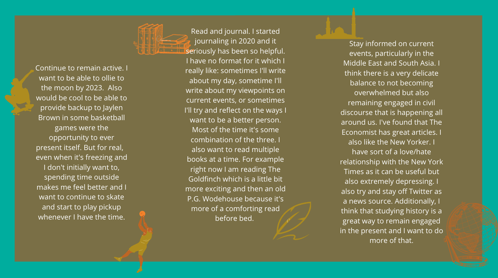

I started playing the flute in fourth grade. Throughout high school I took lessons and gained experience in group ensembles. Now it's become a fun escape from schoolwork. There's something really comforting about spending time working on something that requires so much focus and uses a different part of my brain than I would usually engage.
A piece I've currently been learning:
Back to topOn January 16th, 2001, a small Indian child was born. Her name? Shefali. Shefali Singh to be precise.
Okay so. Sorry about that. My attempt at a subtle James Bond reference. Not so subtle anymore I suppose. But anyways. I'm from Cape Cod, Massachusetts, specifically Falmouth, even more specifically the village of Woods Hole. Summers growing up are some of the favorite memories I have to this day: sailing school, science school, and acting camp.
As I grew older, my high school summers were directly related to how I had spent my childhood summers. I worked as a sailing instructor and acting camp counselor.
Being a sailing instructor was pretty cool because not only did I teach the sailing school, I also taught private lessons. My favorite was teaching adults who had never sailed before because they were so eager and excited to get on the water, and that eagerness was infectious.
Being an acting camp counselor at a camp that I loved so much growing up was also a really special experience. It was fun to have an outlet to be creative and think of unique skits and concepts with the kids.Back to top
Stand-up comedy is one of my favorite art forms. My favorite comedian of all time would be Dave Chapelle, although some of my other favorite specials have come from Bill Burr, Pete Davidson, Michael Che, Yvonne Orji, and Hasan Minhaj, Ricky Gervais, and Bo Burnham.
I think stand-up in particular is in danger of falling victim to "cancel culture" by its very nature. Stand-up provides striking critques of the absuridities that exist in society but does so in a highly accessible way. Chapelle's most recent special for example jokes that the United States is so afraid of black people that they will ban guns only if every single black person buys a gun. He also calls the trans community "alphabet" people which taken out of context seems offensive. But while I was watching the special it struck as me actually one of the most progressive viewpoints I had seen on the matter.
I think with my generation especially there is this "pc" culture which was born out of a very real need to address the toxic climate surrounding women / people of color / members of the LGTBQ community.
However, taken to extremes, it can also seriously disrupt productive discourse and education to people who genuinely want to learn more. Back to top
What better time for self improvement than the the abritrary construct of the New Year? Haha. :) But without further ado. Here are some of my goals for 2021:
 Back to topI am part philosophy major which basically means I spend a lot of time just... thinking. Recently I've been thinking a lot about perception. Here are some questions I've been pondering (I debated using whether or not I should use the word pondering but here I am)
Do we exist outside of other’s perceptions of ourselves?
Can one be perceived if one does not occupy a physical form? (if the answer is yes because of God(s) then my follow-up question is whether or not we perceive God(s), i.e. is/are God(s) a real presence that we perceive or is it simply a collection of texts that we have internalized to stand in place of perception)
Does any part of the material world exist? (inspired by George Berkeley's "master argument")
Various animations can be built up through user text input. I made this for my Object Oriented Design class with my friend Lisa. We utilized Java, the Java Swing Framework, principled use of MVC design pattern, visitor pattern, and delegation.
Back to topCurrently I am interested in lots of things. Machine learning and neural networks for one, so I am taking a Linear Algebra course to better understand the subject.
I'm also interested in the law as it applies to digital technologies: privacy, facial surveillance/facial recognition fair use, and am currently taking a class about such matters as well as incorporating the technological laws that are constantly being debated and passed into my daily news feed. Here's a quick debriefing I recently wrote up on policing and facial recognition techonologies.
My resume with some more specific contact info
Email me! Or connect with me on LinkedIn
Back to top